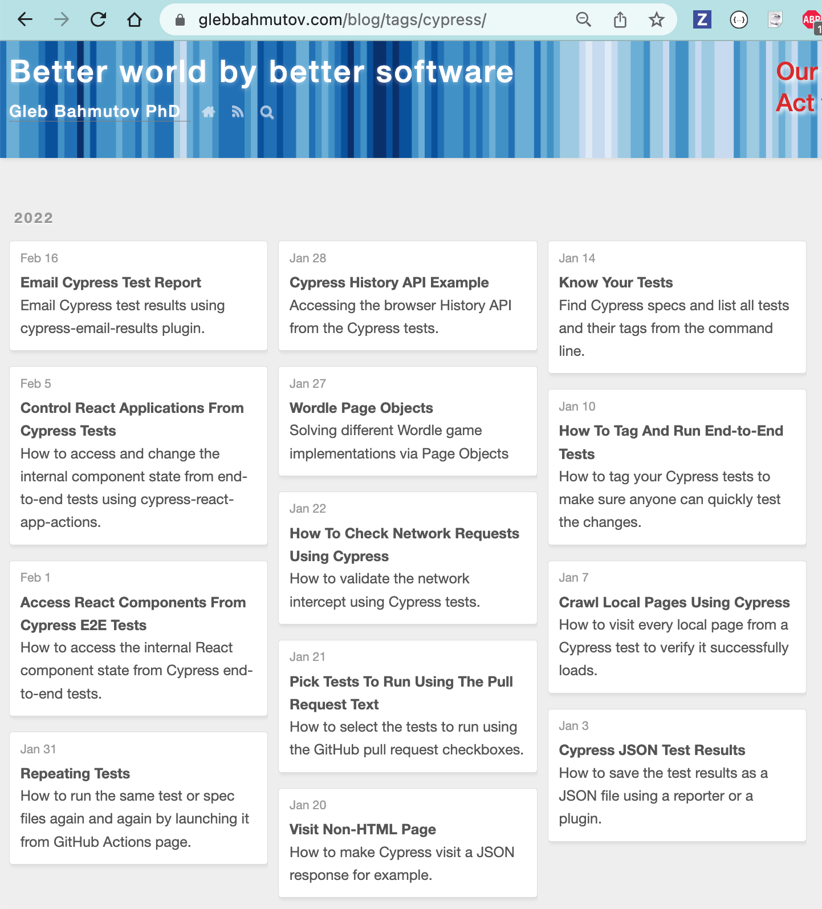

In the previous blog post Scrape Static Site with Algolia I have shown how to scrape a static site to make it instantly searchable. After each deploy, you run the scraper which replaces the entire Algolia index with new content. That might work for smaller sites, but quickly runs into Algolia usage limits as the site scales up. I have an Algolia index for all my Cypress blog posts and scraping all blog posts again and again generated way too many record operations, hitting the 10k limit on my free Algolia plan.
The worst thing was - when I publish a new Cypress blog post, the rest of the posts stay unchanged, so all that scraping is replacing the search records with identical records. We need to devise a way to only scrape the new and the changed blog posts. This is what I call "incremental" scraping.
Text records
Another problem one can run into is the number of records created by blog post. At first, I used a CSS selector that returns all paragraphs, list items, and even the code comments to create individual Algolia records
1 | .article .article-inner .article-entry p, |
For a typical blog post like Email Cypress Test Report the above selector returns 20 text records.
In addition, the text records, we scrape the H1, H2, and the blog description, creating hierarchical Algolia records. All this means that a typical post on my blog generates 25 - 80 Algolia records. Multiply by the number of Cypress posts I have written over the years (180+ as of this writing) and each scraping session might use up 9k Algolia operations. For comparison: the free Algolia monthly plan has a limit of 10k operations - and we are hitting it in a single scrape!
Changing the text records
After consulting with the Algolia engineers, I have decided to change how the scraping records are formed. Instead of taking the individual P, LI, and .comment elements, and creating a record for each one, I have decided to combine them all into a single text record. After all - you cannot individually target a P record. My blog post only has anchor links for the header elements, thus all the P, LI, and other elements between them could be a single Algolia text record with the header anchor.
Unfortunately, the default Algolia scraper code does not allow merging the text records into one large record before uploading. Thus I needed to implement something myself. Luckily, Cypress can load the page and process it in every possible way. Time to write our own scraper.
Scraper inside Cypress
üéÅ You can find my source code used to incrementally scrape the blog posts in the repository bahmutov/scrape-blog-post-page.
Using the cy.get command we get the individual records, including the headers. Then we combine them into largr text records, up until we see a header element. Then we start a new text record. This is done by Cypress in cypress/integration/utils.js file
1 | export function hasAnchor($el) { |
Whenever we see a header element with an anchor, we start a new text record. All the individual P and .comment records after that are appended as text, forming one large chunk of text (the code later checks the total text record size, Algolia recommends the records to be below 10k or 100k bytes). Thus instead of 20 individual text records, the "Email Cypress Test Report" blog post will have just 3 text records plus a few header records.
A typical Algolia record has one or several paragraphs of text, an anchor, and the full URL that uses the anchor to immediately direct the user to the right place. Here is the user searching using a part of the text above. You can try searching yourself by going to cypress.tips/search

When the user clicks on the search result, they are directed to the section's URL.
I use Cypress to scrape, even if something like cheerio.js is faster. I can see and debug the scraper much better by using the Cypress GUI. I can see each found DOM element (including using at the DevTools Elements panel), step through the code, save the intermediate records - all to understand what the scraping algorithm is doing. If I wanted, I could then transfer the scraper logic into a Node script using cheerio.js. But as you will see in the next section, there is no need to optimize the speed of the scraper at the expense of the debugging experience - because we will scrape very few posts at a time.
The merged text and header records are then uploading to Algolia using the code inside the Cypress plugins file.
1 | const algoliasearch = require('algoliasearch') |
Note that if a blog post has been edited, we need to remove any existing records, which I do by using the post slug
1 | // take the last part of the url which is the post name |
Now we just need to make sure we only scrape the changed and the new blog posts.
Incremental scraping
On my Hexo blog every published blog post has its "lastmod" date, which you can find in the sitemap.xml
We can get the list of Cypress blog posts from the /tags/cypress/ page.

Tip: if you use the pagination in Hexo blog, then the "tag" page only shows the first N blog posts for a tag. I have removed this limit by cloning the pagination plugin which you can find at bahmutov/hexo-generator-gleb.
Getting the list of URLs from the tag page is simple to do using cheerio.js in get-post-urls.js
1 | const cheerio = require('cheerio') |
Any time we want to get the list of blog posts to scrape, we can get the sitemap, parse it into URLs and the last modified dates. At the same time we get the Cypress post URLs and intersect the two lists.
1 | const fs = require('fs') |
I like saving the intermediate results as JSON files, because that allows me to inspect the data, and continue from a known state. Now we need to decide for each URL if it needs scraping. At first, I tried to use Algolia to tell me the scraped timestamps, but later decided to simplify the logic and just have a database of records and the scrape timestamps. I have created was-it-scraped NPM module to abstract saving which records were scraped already. Under the hood it uses an external Supabase database, but you could use a local JSON file as well. Now we can write a script to filter all the found Cypress blog posts and only leave the ones that need scraping:
1 | const fs = require('fs') |
A typical run quickly goes through the hundreds of URLs to only find the new and the modified blog posts.
In the above run, only a single blog post URL will require scraping.
The last Node script goes through the list of URLs to scrape and fires up Cypress via its NPM module API. After scraping it marks the last scraped timestamp in the database for those blog posts using the was-it-scraped module and its markScraped function.
1 | const { markScraped } = require('was-it-scraped') |
Continuous incremental scraping
We can do the scraping locally, but a more consistent way is to let the CI run the scraper every night. I am using GitHub actions to call the above scripts, see the code in the .github/workflows/scrape.yml file.
1 | name: Scrape |
The above workflow is fast. For example, a recent run with one blog post to scrape took 35 seconds.
When scraping the blog post, Cypress outputs the main messages about the scraping progress.
Even this blog post will be scraped automatically, as it tagged "cypress" too. And here it is - scraped by the CI üéâ
See also
- Scrape Static Site with Algolia is a good introduction to scraping
- Scrape Slides how similarly to this approach I scrape my [slides.com/bahmutov](https://slides.com/bahmutov) presentations
- I scrape my YouTube Cypress Tips & Tricks playlist using the code in bahmutov/scrape-youtube-videos